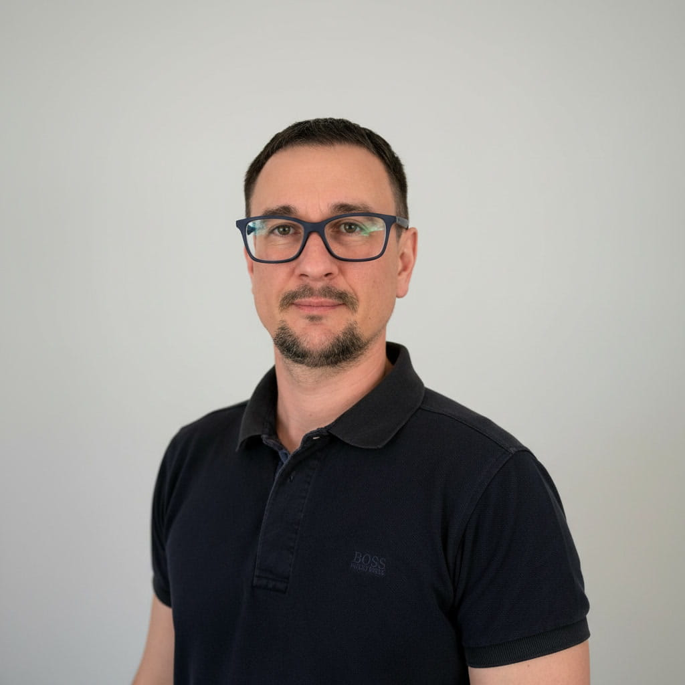

Junior Full-Stack Developer
Derzeit in Ausbildung zum Full-Stack Developer (GoIT) mit Fokus auf moderne Webtechnologien. Starke analytische Fähigkeiten durch juristische Ausbildung sowie praktische Erfahrung mit IT-Systemen, Netzwerken und Software. Schnelle Auffassungsgabe, hohe Lernbereitschaft und großes Interesse an moderner Webentwicklung.
Team development project created using HTML, CSS and JavaScript. Collaboration through GitHub workflow (branches, pull requests).
Live DemoInteractive greeting website built with HTML and CSS.
Live DemoResponsive holiday themed website.
Live DemoResponsive layout project built with HTML and CSS.
Live DemoEmail:📧 andreassydorchuk@gmail.com
GitHub: github.com/AndreiSidorciuc